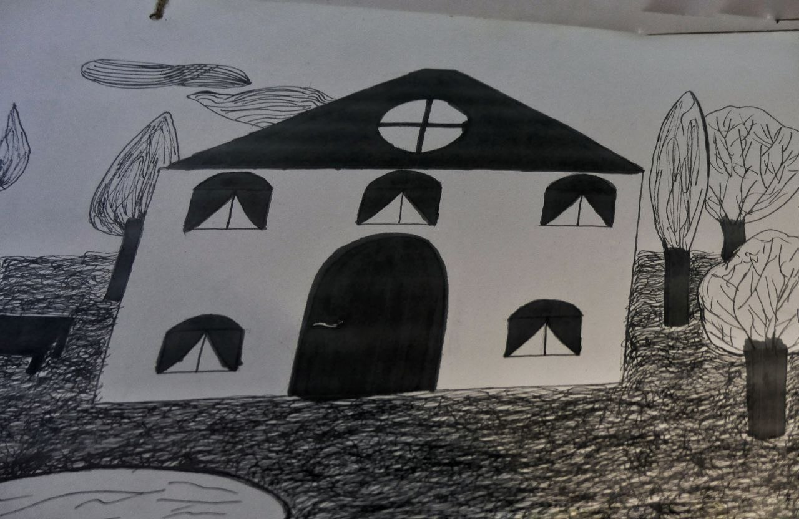

.jpg)
Ayda Camp contains the population that has been most exposed to tear gas from around the world.
The place is north of Bethlehem and began as a collection of crowded tents like all refugee camps. The people who lived inside spent months thinking they would return home, caught in time between the certainty of the disaster that had led them to this situation and the uncertainty of knowing what life awaited them after. After of what?
The buildings, built after the clash with reality, grow upwards together with the increase of the family. The generations share the buildings and consume the same air that their grandparents consumed, the circumstances don't change and their members seem to be able to touch each other through the windows.
On the roofs of all the buildings, one is able to see the wall and the control tower. People are exposed to constant surveillance and abuse from someone who may one day decide that your belongings are no longer yours.
Children have experienced serious bullying, soldiers enter their homes at night, a routine search, and no matter how hard their parents try to make them believe they are nightmares, the army is part of every movement of refugee children's lives. Abed al-Rahman Shadi Obeidallah was thirteen years old and his life ended after he was shot by an Israeli soldier. He was still carrying his school bag.
In the houses, a little girl plays with her father, she hugs her grandmother or stains her face with chocolate. Some children play soccer and others paint their dream reality. They dream of living in a house with a garden, privacy, trees and free from occupation.
